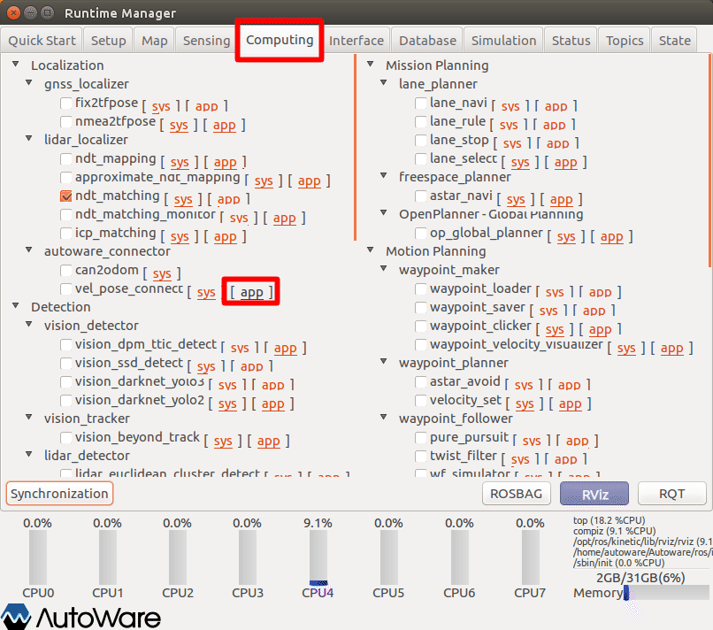
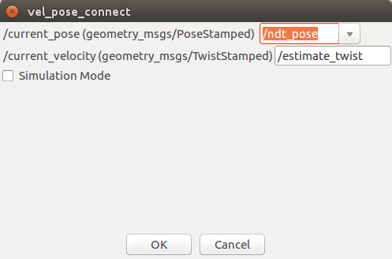
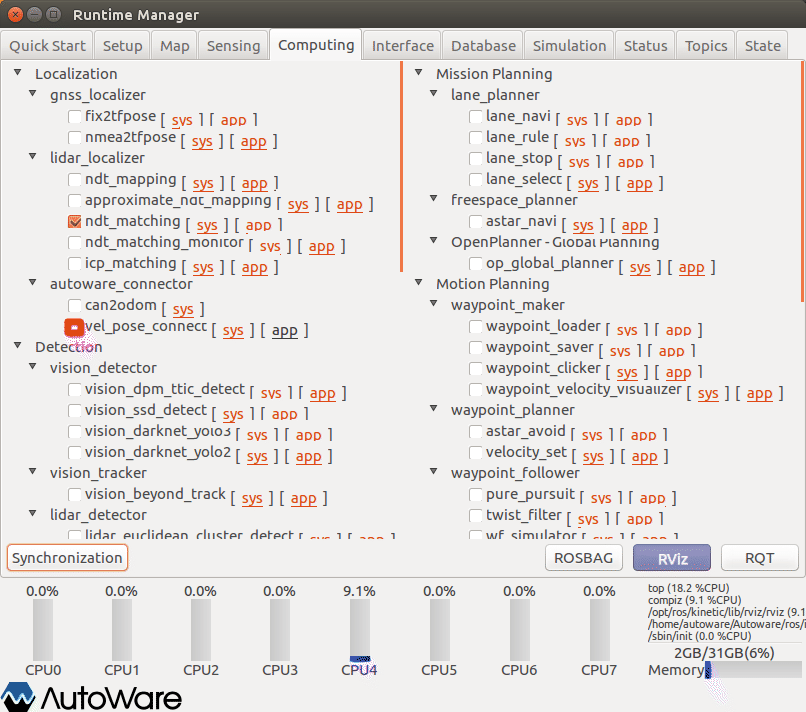
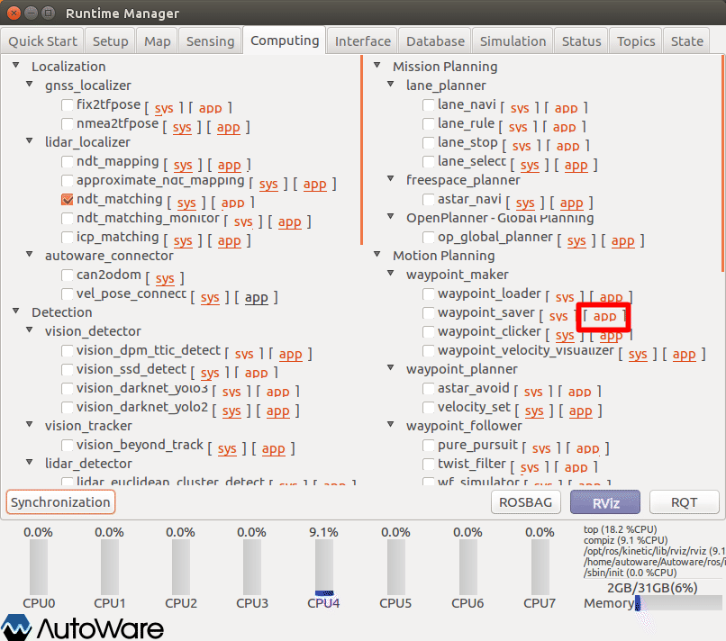
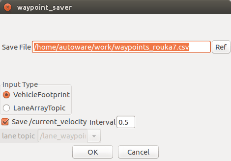
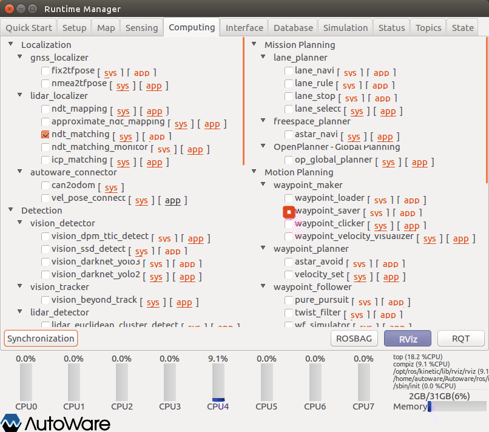

8.経路設定ファイル作成
ROSBAGに取得した走行履歴をもとに経路設定（waypoint）ファイルの作成方法を以下に示す。
事前準備
事前に、以下の準備をしておくこと。
・AGVの自己位置推定設定（※ROSBAG再生 ~ ROSBAG一時停止の再開直前まで）
AGVの推定姿勢・速度算出の設定
AGVの推定姿勢・速度算出のため、｢vel_pose_connect｣を設定する。

Runtime Managerの［Computing］タブを選択。
vel_pose_connect項目［app］押下でパラメタ設定画面を表示する。

- vel_pose_connectパラメタ項目を適宜設定する。（※設定内容はたぶん画面内容のままでよい。）
- ［OK］ボタン押下で前画面に戻る。
※設定詳細は、「Autoware 自動運転ソフトウェア入門」P158参照

- vel_pose_connect項目チェックBOXをチェックありにする。
waypoint saverの設定
AGVの姿勢・速度をもとに、waypointファイルを作成するための設定をする。

Runtime Managerの［Computing］タブを選択。
waypoint_saver項目［app］押下でパラメタ設定画面を表示する。

- waypoint_saverパラメタ項目を適宜設定する。
- ［OK］ボタン押下で前画面に戻る。
| # | 項目名 | 内容 | 単位 | smagv妥当値 |
|---|---|---|---|---|
| 1 | Save File | 出力するwaypointファイル名。（新規ファイル名を設定すること。） | - | - |
| 2 | Input Type | - | - | Vehicle･･･ |
| 3 | Save/current_velocity | 速度保存可否を選択。チェックがない場合は0で保存される。 | - | チェックあり |
| 4 | Interval | 何メートルおきにwaypointを保存するかを設定する。 | m | 0.5 |

- waypoint_saver項目チェックBOXをチェックありにする。
ROSBAG再生の再開
一時停止しているROSBAG再生を再開をする。
RViz表示で、走行経路上にwaypointが、表示されていくことを確認する。
その他
- 動作完了後、指定したCSVファイルが作成されていることを確認する。
waypoint_saverはver3フォーマットの保存に対応している。change_flagは基本的に0（直進)で保存されるので、レーンチェンジを行いたい場合は各自で編集する。（1なら右折、2なら左折）